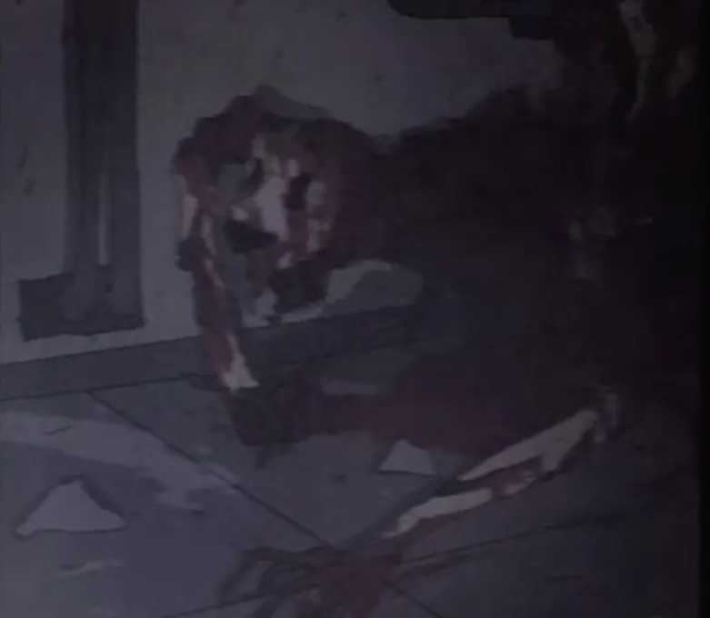
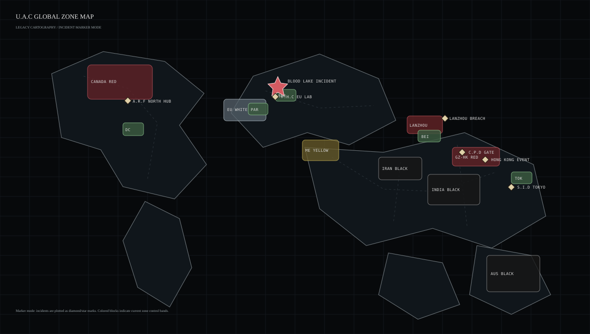
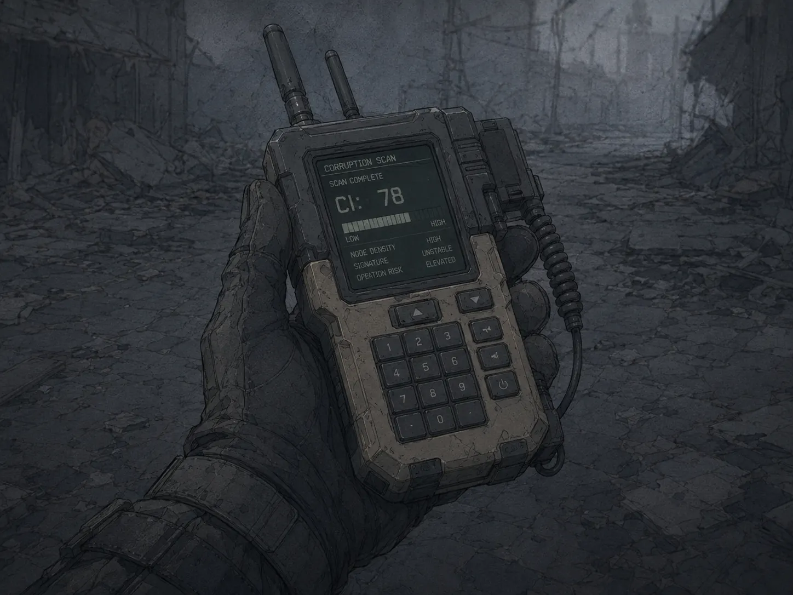
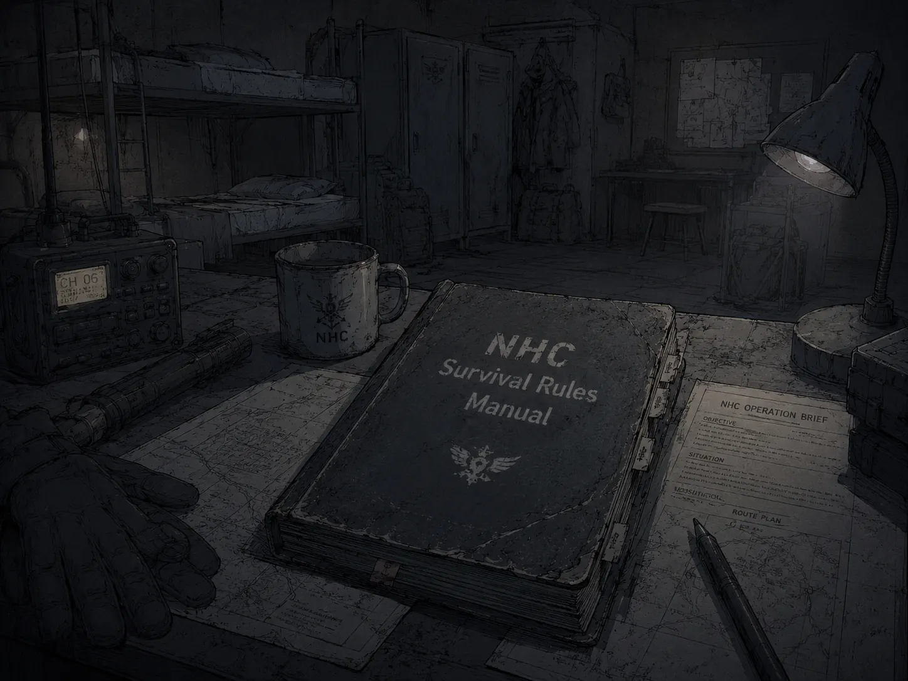
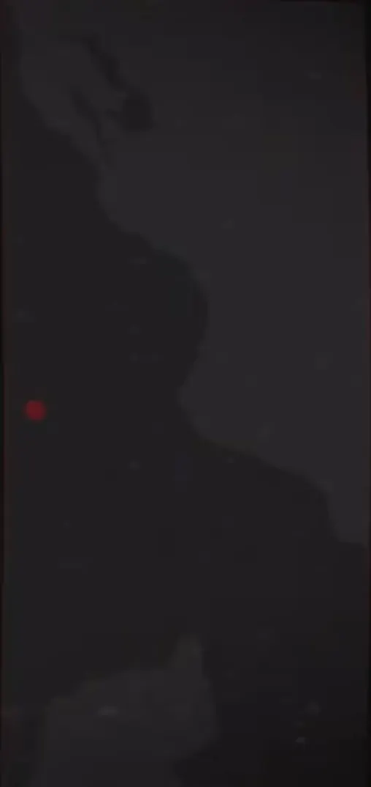
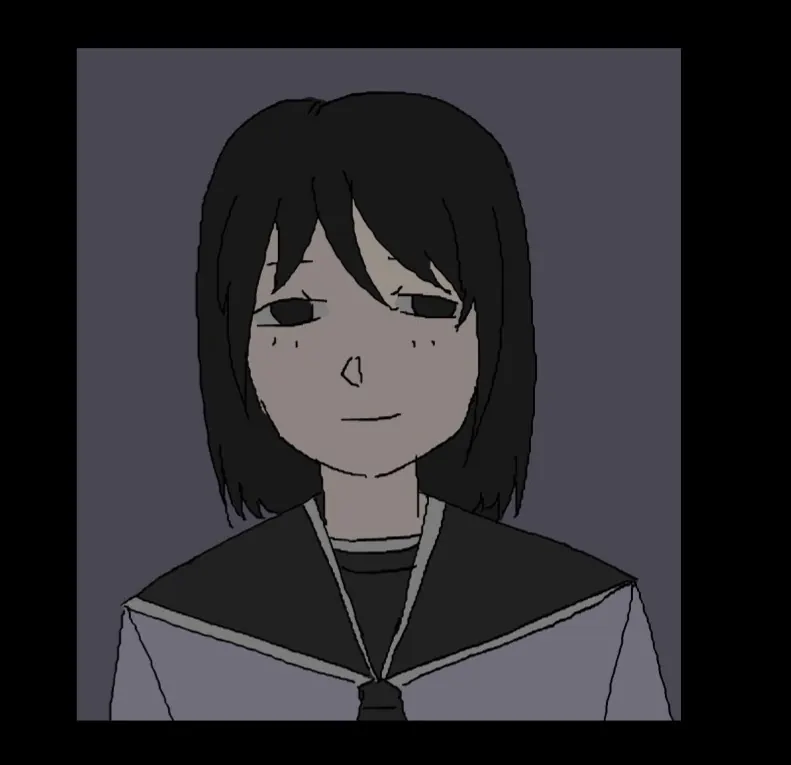
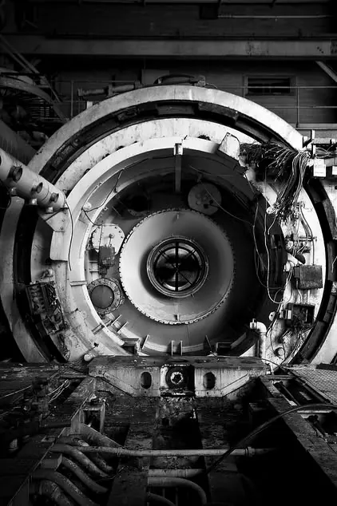
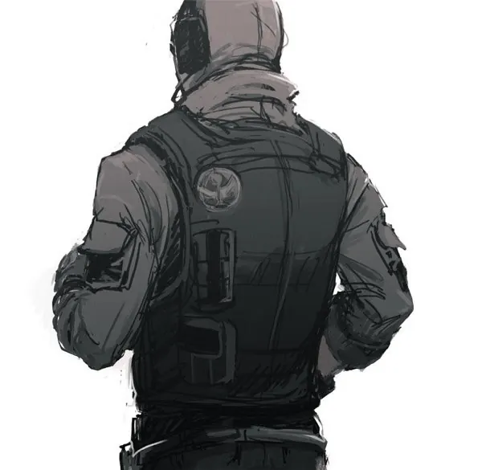
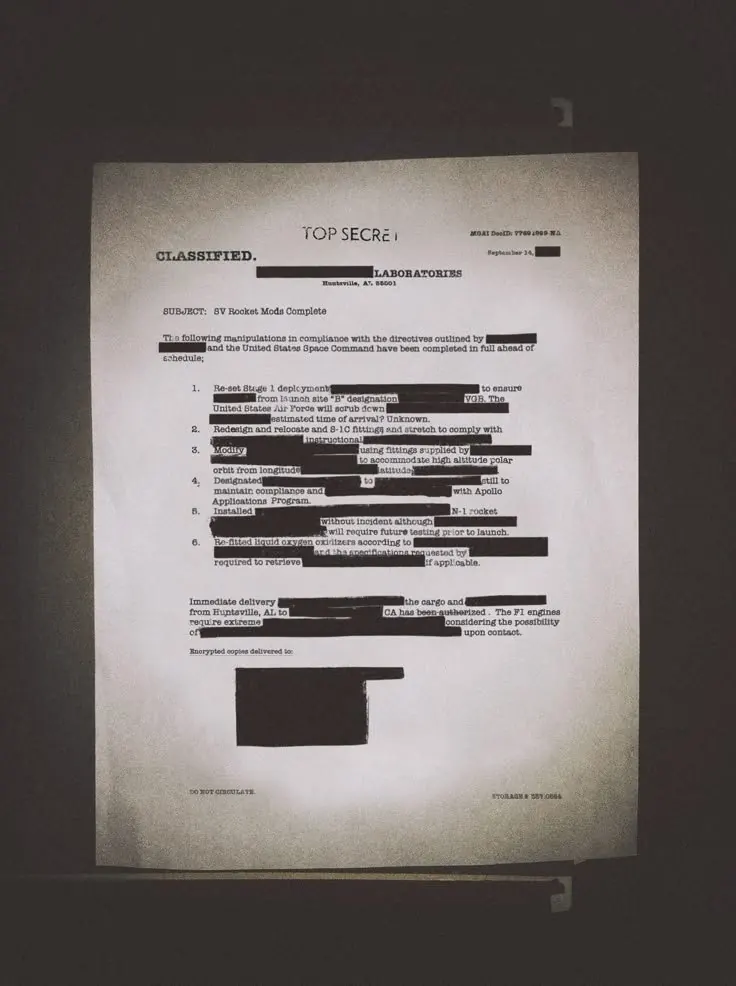
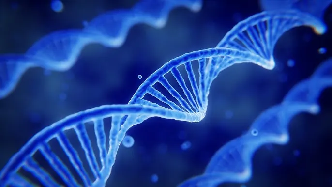

Cults_871104
F.H.C 극비 보안 문서

괴이·오염
타락교, 혈교, 피의 호수, 혈무 제작, 제압된 타락체 등 오컬트 위협 사례를 다루는 기록이다.
기록 열람[BOOT] U.A.C LEGACY RECORD TERMINAL POWER CHECK
[DRIVE A:] ORIGINAL RECORD INDEX DETECTED
[DISPLAY] CRT SCANLINE / 4:3 RECORD MODE READY
[MEMORY] FACTION / RELATION CACHE LOADING
[MAP] GLOBAL ZONE LAYER MOUNTED
[READY] OPENING WORLD OVERVIEW
1986년 피의 호수 사건 이후 세계 각지에서 이상현상, 우시노다교 의식, 페럴 출현, 귀환자 기록, 레드존 확산이 연쇄적으로 보고되기 시작했다. 이 사건은 이후 U.A.C 창설과 S.I.D, N.H.C, A.R.F, C.P.D, Ash Crew로 이어지는 재난 대응 체계의 기점으로 분류된다.
피의 호수 사건은 독일 함부르크와 덴마크 사이의 북해권에서 발생한 것으로 기록된다. 이후 중국 란저우, 광저우, 홍콩 권역과 캐나다 일부 지역에서 레드존이 확산되었고, 오스트레일리아, 인도, 이란 일대는 블랙존으로 봉쇄되었다. 나머지 국가의 수도권과 핵심 행정권은 Green Zone으로 관리된다.
독일 함부르크와 덴마크 사이에서 대규모 의식과 생체 오염 사건이 발생한다. 이 사건은 불멸 연구, 우시노다교 의식, 괴이 발생 기록의 출발점으로 남는다.
기존 법집행기관으로 설명할 수 없는 오염, 사체 변이, 괴이체, 기억 왜곡 현상이 확인되며 도시 이상현상 격리국이 설립된다.
초기에는 U.A.C 산하 조사·현장 진압 부서였으나, 사건 규모 확대 이후 S.I.D는 특수 조사 기관으로, N.H.C는 독립 현장 대응 조직으로 재편된다.
중국 란저우, 광저우, 홍콩 권역과 캐나다 일부에서 레드존이 확인된다. 이 시기부터 그린존, 화이트존, 옐로우존, 레드존, 블랙존 분류 체계가 본격적으로 쓰인다.
오스트레일리아, 인도, 이란 일대가 회수 금지 구역으로 전환된다. U.A.C는 해당 권역을 일반 정찰 대상이 아니라 기록 손실과 정보 붕괴가 발생하는 고위험 구역으로 분류한다.
N.H.C 1차 작전팀 레드울프의 이탈 이후, 생존 인원과 관련 세력이 신디케이트 계열 작전 집단으로 재분류된다.
주요 수도권은 그린존으로 관리되지만, 레드존과 블랙존의 경계는 계속 변동 중이다. U.A.C는 구형 기록 단말기를 통해 원본 기록과 현장 보고를 보존한다.
세력 마크를 누르면 해당 세력의 설명만 표시된다. 세부 설명은 오른쪽 상단의 기록면 버튼으로 넘겨볼 수 있다.
| 구분 | 관계 | 상태 | 설명 |
|---|---|---|---|
| 우호/협력 | U.A.C ↔ N.H.C | 작전 협력 | U.A.C가 구역 정보와 봉쇄 명령을 제공하고 N.H.C가 현장 전투와 봉쇄를 수행한다. |
| 우호/협력 | U.A.C ↔ S.I.D | 정보 공유 | 실종, 오컬트 범죄, 우시노다교 관련 사건 조사를 위해 기록을 공유한다. |
| 우호/협력 | N.H.C ↔ A.R.F / Ash Crew | 작전 후처리 | N.H.C가 현장을 확보하면 A.R.F가 회수하고 Ash Crew가 오염 잔류물을 처리한다. |
| 감시/불신 | U.A.C ↔ F.H.C | 연구 의존 / 상호 감시 | F.H.C의 연구 자료는 필요하지만, 생체 실험과 은폐 가능성 때문에 감시가 유지된다. |
| 감시/불신 | U.A.C ↔ Amarion | 자료 회수 / 기업 감시 | 의료 재조립과 제약 연구 기록 때문에 협력과 감시가 동시에 이루어진다. |
| 적대/위험 | N.H.C ↔ Syndicate | 이탈자·시료 추적 | Redwolf 계열 이탈 전투조직은 Syndicate 내부 작전 집단으로 통합 기록된다. |
| 적대/위험 | S.I.D ↔ 우시노다교 | 조사 / 적대 | 의식 범죄, 기억 오염, 귀환자 왜곡 사건의 핵심 적대 세력으로 분류된다. |
| 적대/위험 | C.P.D ↔ 오염 귀환자 집단 | 보호 / 격리 | 귀환자는 보호 대상이지만 오염 징후가 확인되면 별도 격리된다. |
세계지도와 구역 위험도 분류를 통합한 화면이다. 지도는 크게 표시하고, 오른쪽에는 색상별 구역 설명만 배치한다.

각국 수도와 핵심 행정권을 중심으로 유지되는 안정 민간 구역.
피난민 수용, 귀환자 선별, 오염 검문이 이루어지는 정화·통제 구역.
레드존 외곽의 감시·완충 구역. 정찰과 봉쇄 준비가 병행된다.
중국 란저우, 광저우·홍콩, 캐나다 일부에서 발생한 활성 재난 구역.
오스트레일리아, 인도, 이란 일대의 회수 금지 심층 구역.
독일 함부르크와 덴마크 사이에서 발생한 피의 호수 사건 권역.
Gray는 통제 붕괴권, Blue Node는 지원 시설, Crimson Core와 Black Core는 핵심 위험 지점을 뜻한다.
기록보관소에서는 세력 색인을 제외한 원본 설정 기록을 분류별로 열람한다. 세력 개별 설명은 세력 정보 메뉴에서 확인한다.

레드존 내부 이상현상, 오염 지수, 문 현상, 통신 오염 기준을 정리한 문서다.
기록 열람
괴이 개체, 우시노다교, 의식 집행자, 귀환 민간인을 구분하는 분류 문서다.
기록 열람
N.H.C 현장 규칙, 회수 금지 기준, 장비, 시설, 차량, 봉쇄 코드를 정리한 문서다.
기록 열람
피의 호수와 불멸 실험, 현장 촬영 및 통신 임무의 기원 사건 파일이다.
기록 열람
S.I.D 일본 도쿄 지부의 오컬트 사건과 사쿠마 유타 실종을 다루는 보고서다.
기록 열람
F.H.C가 회수한 아마리온 제약 내부 사전교육 영상 복구 기록이다.
기록 열람
N.H.C 1차 작전팀 이탈과 신디케이트 재분류 정황을 다루는 회수 기록이다.
기록 열람
우시노다의 힘을 병기화하려는 계획과 혈무, 생체 병기화 정황을 다룬다.
기록 열람
괴이 유전자, 생체 프린팅, 비인가 유전자 연구를 다루는 기록이다.
기록 열람